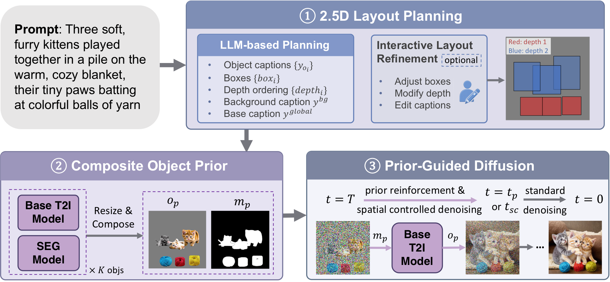
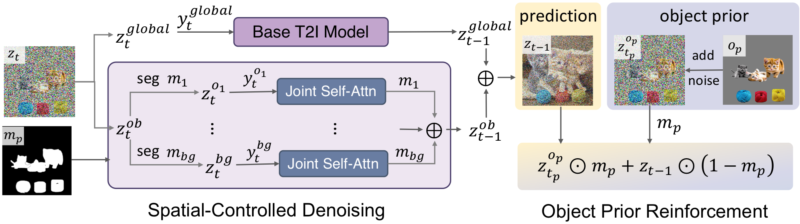
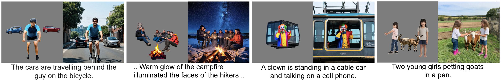
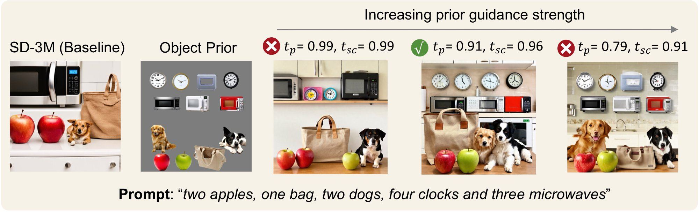
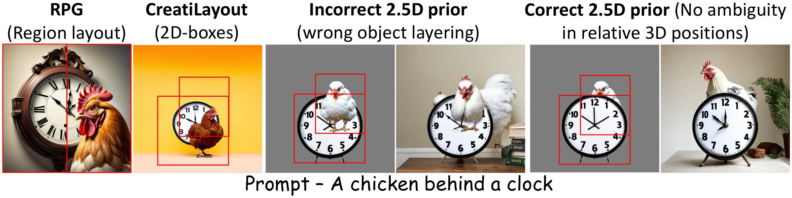
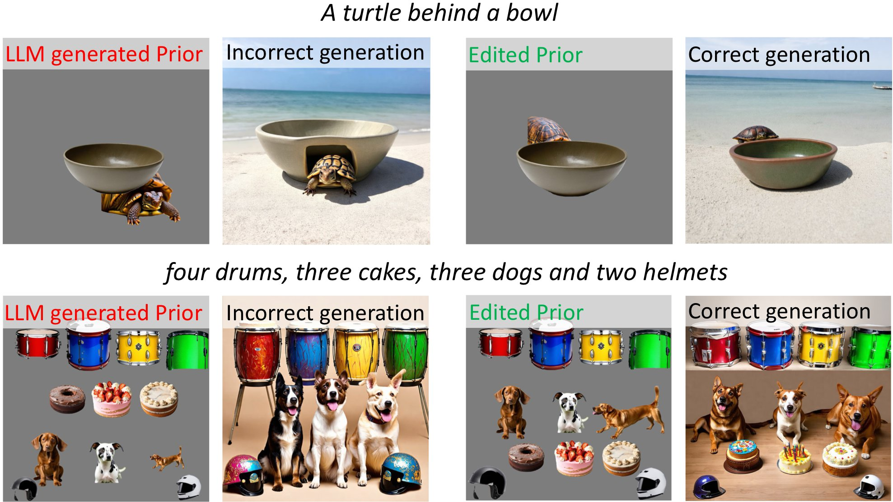
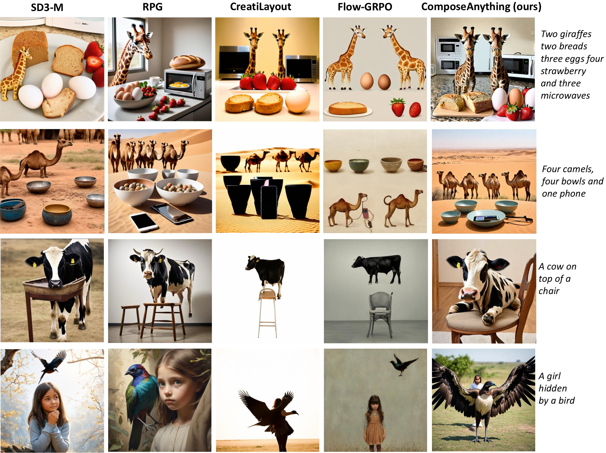

Layout-based compositional methods improve text-to-image generation by specifying where objects should appear, but most rely on sparse 2D constraints with limited appearance, occlusion, and depth-aware cues. We show that compositional generation can be substantially improved by replacing purely geometric guidance with an editable visual prior for diffusion initialization. We introduce ComposeAnything, an inference-time framework built around a 2.5D Composite Object Prior, an editable RGB image that specifies object appearance, layout, scale, and depth-aware ordering. We transfer this prior through Prior-Guided Diffusion, which combines Object Prior Reinforcement (OPR) to preserve object structure and appearance with Spatial-Controlled Denoising (SCD) to improve region-text alignment and reduce semantic leakage. Early guidance preserves the prior structure, after which standard denoising refines the image coherently. Extensive evaluations on T2I-CompBench, NSR-1K, and GenEval show strong gains in spatial reasoning, 3D-spatial relations, counting, and surreal compositions while maintaining visual quality and efficiency.

An LLM writes a caption, box and depth for every object, plus background and global captions.
Each object is generated alone, cut out, resized to its box and pasted back to front into a collage.
Generation starts from the noised collage: guided early steps, then normal denoising.

Resets the object regions to the noised prior after every step until tp, keeping their appearance and depth order.
Denoises each region with its own caption, next to a global branch with the full prompt, until tsc.
Lower tp, tsc = stronger guidance. Defaults: tp = 0.91, tsc = 0.96, 28 steps.
The prior acts only in the early steps, so the model fixes what the collage gets wrong. Left: prior, right: final.

tp (OPR) and tsc (SCD) set the strength; lower means stronger.

2D layouts cannot say which object is in front; our prior is pasted back to front.

The prior is a picture, so a person can correct it before generating.

Best on 2D/3D-spatial, counting and complex prompts, and on NSR-1K.
| Method | T2I-CompBench | NSR-1K | ||||||
|---|---|---|---|---|---|---|---|---|
| 2D-Spatial | Count | 3D-Spatial | Complex | Color | Texture | Spatial | Count | |
| SD-v1 | 12.46 | 44.61 | – | 30.80 | 37.65 | 41.56 | 16.89 | 31.45 |
| Attend-Excite v2 | 14.55 | 47.67 | – | 34.01 | 64.00 | 59.63 | 26.86 | 39.41 |
| SDXL | 21.33 | 49.88 | 47.12 | 32.37 | 58.79 | 52.99 | 31.57 | 30.62 |
| PixArt-α | 20.82 | 50.58 | 38.62 | 33.57* | 68.86 | 70.44 | – | – |
| RealCompo | 31.73 | 65.92 | – | 31.27* | 77.41 | 74.27 | – | – |
| SD3-M | 31.32 | 60.22 | 49.43 | 37.71 | 81.32 | 73.34 | 44.43 | 44.61 |
| FLUX | 26.13 | 60.58 | 59.51 | 37.03 | 74.07 | 69.22 | 39.29 | 55.97 |
| RPG* | 40.26 | 56.39 | 50.93 | 36.53 | 76.80 | 61.95 | 52.24 | 39.81 |
| RAGD* | 42.56 | 57.38 | 62.42 | 36.68 | 80.39 | 70.85 | – | – |
| Inference-scale | 31.51 | 67.89 | – | 38.10 | 83.03 | 73.64 | – | – |
| ComposeAnything | 48.24 | 68.21 | 77.16 | 38.66 | 81.11 | 73.74 | 63.80 | 59.36 |
Inference-based methods. * reproduced.
Best overall, and 7–18× faster than Reflect-DiT and InstanceGen.
| Method | Single obj. | Two obj. | Count | Color | Position | Attribute | Overall ↑ | Time (s) ↓ |
|---|---|---|---|---|---|---|---|---|
| SD3-M | 0.99 | 0.84 | 0.56 | 0.84 | 0.32 | 0.52 | 0.68 | 4.0 |
| RPG* | 0.99 | 0.82 | 0.43 | 0.76 | 0.63 | 0.64 | 0.71 | 15.49 |
| CARINOX | 1.00 | 0.86 | 0.66 | 0.90 | 0.16 | 0.48 | 0.68 | 70.0 |
| Reflect-DiT | 0.98 | 0.96 | 0.80 | 0.88 | 0.66 | 0.60 | 0.81 | 118.0 |
| InstanceGen | 0.97 | 0.87 | 0.68 | 0.85 | 0.64 | 0.73 | 0.79 | 300.0 |
| ComposeAnything | 1.00 | 0.93 | 0.70 | 0.85 | 0.83 | 0.72 | 0.84 | 16.37 |
* reproduced. Time: seconds per image.

Counting, 2D- and 3D-spatial prompts, against inference-only and training-based methods.
@inproceedings{khan2027composeanything,
title = {ComposeAnything: Composite Object Priors for Text-to-Image Generation},
author = {Khan, Zeeshan and Chen, Shizhe and Schmid, Cordelia},
booktitle = {Proceedings of the IEEE/CVF Winter Conference on Applications of Computer Vision (WACV)},
year = {2027}
}This work was granted access to the HPC resources of IDRIS under the allocation AD011014688R1 made by GENCI. It was funded in part by the French government under management of Agence Nationale de la Recherche as part of the “France 2030” program, reference ANR-23-IACL-0008 (PR[AI]RIE-PSAI projet), and Paris Île-de-France Région in the frame of the DIM AI4IDF. Cordelia Schmid would like to acknowledge the support by the Körber European Science Prize.
The documents contained in these directories are included by the contributing authors as a means to ensure timely dissemination of scholarly and technical work on a non-commercial basis. Copyright and all rights therein are maintained by the authors or by other copyright holders, notwithstanding that they have offered their works here electronically. It is understood that all persons copying this information will adhere to the terms and constraints invoked by each author's copyright.